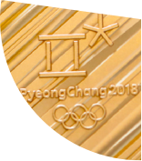
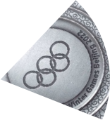
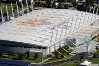
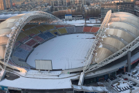
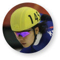
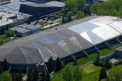
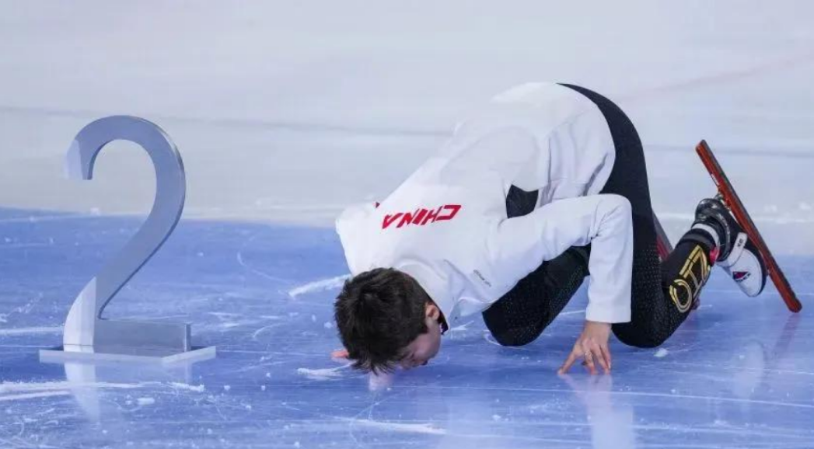

运动员的策略、胆识、技巧于刹那之间在冰面上高速巡回，这样的场景你只有能在短道速滑看到。身体的短兵相接，名次的几度易手，这项被冠以“急速冰上飞驰”的冰上项目受到众多追崇与喜爱。
短道速滑一直是中国冬季运动的强势项目。20世纪90年代以来，短道速滑领域呈现出三足鼎力的局势，中国、韩国、加拿大三国牢牢占据了冬奥会短道速滑奖牌榜的前三名，与剩余国家的奖牌数目差距显著。奥林匹克官网数据显示，1992年至2021年，中国、韩国和加拿大分别在短道速滑世锦赛中占据了24%、34.2%和20.8%的奖牌，多于其他国家所获奖牌的总和。
【1992年至今各国所获冬奥会奖牌数量对比】
点击奖牌披萨查看不同国家成绩
1.数据来源：奥林匹克官网
2.对于奖牌榜的前四名，我们选取了各国曾举办过的冬奥会的奖牌图片进行填充，并用奖牌的种类（金、银、铜）分别展现该国家在短道速滑冬奥会奖牌榜的名次。
从冬奥会短道速滑项目来看，这四个国家的奖牌分布各有特色。韩国在单人长距离项目上优势明显，在女子/男子1000米和女子/男子1500米项目上的奖牌数量占项目总奖牌数的39%。
从奖牌分布的范围来看，中国是四个国家中唯一一个在各个奥运项目上都获得了奖牌的国家。从奖牌得主的性别来看，加拿大的男子项目明显优于女子项目，中国的情况则相反。
在短道速滑的个人项目中，获得奖牌数目排名前四的运动员中有三位是女性。其中，王濛更是以三金一银一铜的优异成绩，稳居我国冬奥短道速滑项目奖牌榜的第一名。
【韩国、加拿大、中国冬奥会短道速滑项目奖牌分布图】
鼠标悬停以获得更多信息
数据来源：奥林匹克官网
红色冰刃：中国短道速滑的传奇征程
1988年，短道速滑首次作为表演项目出现在奥运会的舞台上，中国运动员李琰便在女子1000米表演赛中一举夺魁，并创造了1000米和1500米两项崭新的世界纪录。纵观短道速滑奥运史，中国短道速滑队从未缺席，为世界冰迷贡献了无数个精彩瞬间。
【中国短道速滑冬奥会奖牌获得情况】
鼠标悬停以获取更多信息
速滑不止，烈焰不熄。李佳军、王春露、杨阳、杨扬等带领中国短道速滑走过初生；新世纪初，王濛、周洋等接棒，继续领跑世界短道速滑；又十年，武大靖、任子威、范可新等优秀的运动员不断涌现；如今，当初的新生代已成为中国短道速滑代表队的中流砥柱。
平昌冬奥会是冰迷们难以忘怀的一次比赛，中国短道速滑队临危不乱、百折不挠的精神在这次赛事中展现得淋漓尽致。在最后一个决赛日之前，只有17岁的小将李靳宇夺得了一枚银牌，武大靖、任子威、韩天宇、范可新都经历了争议性判罚，这与4年前索契冬奥会上2金3银1铜的成绩相去甚远。但是，平昌冬奥会的最后一天，运动员们依旧以顽强的精神虎口拔牙，拿下男子5000米接力银牌，武大靖更是一举打破世界纪录，站上了短道速滑男子500米项目的最高领奖台。
短短9个月后，这个世界纪录在Utah Olympic Oval冰场被武大靖自己再次刷新，并保持至今，无人超越。武大靖和39,505s的世界纪录，注定成为短道速滑历史上浓墨重彩的一笔。
【短道速滑男子500米世界纪录变化】
悬停以获取运动员照片等详细信息
注：图中时间为场馆所在的当地时间；统计时间范围为1992年-2023年
数据来源：https://sport-record.de/short_track/short_track-isu-records.html
2018-2019赛季国际滑联短道速滑世界杯盐湖城站男子500米A组决赛
这场竞争激烈的比赛在美国盐湖城的Utah Olympic Oval冰场举办，这里产生过着十余次短道速滑世界纪录，目前保持着三项女子世界纪录和三项男子世界纪录，被国际滑联（ISU）称为“世界上最快的冰”。
怎样的冰有助于运动员产生更好的成绩？冰的质量直接影响着冰面与冰刀的摩擦力，是限制运动员速度的重要因素。其次，世界纪录的产生也与冰场的地理位置有关。
【世界著名场馆地理位置分布图】
点击定位图表以获取详细信息
图注：团队统计了1992年至今产生过世界纪录的所有冰场，纪录数据来源于“Progression of World
Records”网站，团队通过ISU（国际滑联官网）、ChatGPT4.0/3.5、维基百科对信息进行了验证，并确认了相关场馆；团队通过Google Earth搜集场馆的经纬度
1992年以来，创造过短道速滑世界纪录的冰场集中于北纬30-60度。较低纬度的地区温度更高，往往面临着较高的制冰成本，滑冰场馆的数量更少，在冰上项目上天然处于劣势。武大靖、王濛、范可新……这些广为人知的中国短道速滑运动员也大多来自纬度更高的东北三省。
除了纬度，短道速滑运动员的发挥还和冰场的海拔有关。
云端之速：高原冰场如何造就巅峰成绩
【短道速滑最新世界纪录及对应运动员、场馆】
点击运动员头像以获取世界纪录详细信息，再次点击可关闭
Utah Olympic Oval, USA
海拔：1426m
Arena COS Torwar, POL
海拔：83m
哈尔滨国际会展中心
体育馆, CHN
海拔：135m
Olympic Oval, CAN
海拔：1110m
数据来源：https://shorttrack.sportresult.com/Records.aspx?evt=11213100000058
海拔在1000米以上的滑冰场被称为高原滑冰场，武大靖突破世界纪录的Utah Olympic Oval冰场正是高原冰场的代表之一。
【场馆产生的世界纪录数目及其海拔】
1.我们统计了1992年（短道速滑于1992年首次被作为冬奥会比赛项目）至今，共计6个项目（考虑到接力的影响因素较多，我们没有统计接力项目）：短道速滑男子500米、女子500米、男子1000米、女子1000米、男子1500米、女子1500米产生的所有世界纪录及相关场馆。
2.世界纪录的数据主要来源于“Progression
of World Records”网站，我们使用ISU（国际滑联官网）、ChatGPT4.0/3.5、维基百科对信息进行了验证，并确认了相关场馆名称；我们通过Google
Earth搜集场馆的海拔（由于网站计算包含建筑高度，我们统一选取了离场馆最近的街道进行海拔的测量）和经纬度。
1992年至今，在盐湖城Utah Olympic Oval冰场和卡尔加里的Olympic
Oval冰场产生的短道速滑世界纪录的数量远超其它场馆。在2016年短道速滑世界杯盐城湖站中，竟然有4项短道速滑世界纪录在两天内被打破，这在整个短道速滑发展历史中都是非常罕见的。
统计2016-17赛季至2020-21赛季举办过短道速滑比赛的所有城市，筛选出参加过在不同城市举行的两次比赛的运动员，然后统计这些运动员在每个城市的平均最佳纪录，相减得出差值，最后依照海拔排序建设出一个差异矩阵如下。
【运动员成绩在不同场馆的差异矩阵】
1.数据来源"How Ice Rink Locations Affect Performance Time in Short-Track Speed
Skating"
2.经过核实，团队对论文数据进行了二次处理，删除了平昌和布达佩斯这两个异常数据。平昌并没有在当地举办过短道速滑赛事，布达佩斯在统计时间内只举办过一次比赛，不符合筛选要求。
矩阵上部颜色明显偏蓝，可知运动员在海拔高的场馆表现明显更优。如果依照海拔高度对色块进行处理，这种趋势将更加明显。
短道速滑前世界冠军王春露曾在采访中表示，高原冰场之所以更容易产生新的世界纪录，是因为高原冰场的空气相对稀薄，空气阻力更小，浇冰的水质纯净，冰面的质量滑感也更好。虽然高原反应会给运动员带来挑战，但经过训练，运动员们往往能够化“高海拔”为机遇，在高原滑冰场留下自己职业生涯的巅峰成绩。
超越：突破来源于崭新的自我
在平原冰场中，唯一能与高原冰场媲美的是北京首都体育馆。2022年北京冬奥会，首都体育馆承办花样滑冰和短道速滑两个项目的比赛，制冰团队通过先进的二氧化碳制冰技术，为运动员们提供了温差均匀、软硬度均匀的冰面。这块冰面海拔仅有50m，却诞生了9项短道速滑世界纪录。可见，突破终究来源于不断提升的自我。
海拔、纬度、冰质……运动员的巅峰成绩受诸多因素影响，每一个世界纪录都由天时、地利、人和的共同造就。这恰恰印证了奥林匹克的格言——更高、更快、更强、更团结。
高原训练、技术革新，从比赛数据的分析到训练方法的改进，从运动员的不懈拼搏到研究人员的精益求精、教练团队的反复琢磨……短道速滑的历史播放至今，每一帧都充斥着汗水和荣耀。

表
数据上的小小飞跃是天佑，也是人为。永恒由无数个此刻构成。
中国传媒大学 新闻学院 可视化软件工具和应用结课作业
小组成员
黄文玥、蔡雨薇、卢冠秋、刘彦彤
指导老师
廉莹
参考资料：
[1]奥林匹克官网 ：https://olympics.com/en/olympic-games
[2]Progression of World Records
：https://sport-record.de/short_track/short_track-isu-records.html
[3]ISU国际滑联官网：https://shorttrack.sportresult.com/Records.aspx?evt=11213100000058
[4]维基百科：https://en.wikipedia.org/wiki/ISU_Short_Track_Speed_Skating_World_Cup
[5]Google
Earth
：https://earth.google.com/web/@37.51747233,127.1000815,14.96388876a,18437.36567887d,35y,0h,0t,0r
[6]这块屡破纪录的冬奥冰场，背后是中国“造冰”技术
：https://m.thepaper.cn/newsDetail_forward_16743071
[7] Sun L, Guo T, Liu F, et al. How ice rink
locations affect performance time in short-track speed skating[J]. Frontiers in Psychology, 2022, 13:
854909.
[8] Chapman R F, Stickford J L, Levine B D. Altitude training considerations for the winter
sport athlete[J]. Experimental physiology, 2010, 95(3): 411-421.
[9]2022年北京冬奥会短道速滑混合接力决赛
：https://www.xiaohongshu.com/explore/63cf31dd000000001b024ee4?app_platform=android&app_version=8.17.0&author_share=1&ignoreEngage=true&share_from_user_hidden=true&type=video
[10]2018/2019赛季短道速滑世界杯美国盐湖城站男子500米决赛：https://www.bilibili.com/video/BV1DP4y1K7Dh/?p=19&spm_id_from=333.880.my_history.page.click&vd_source=3218d9c7f61f8638b42b4a6a501d8221
[11]A
season’s best: Fastest ice on earth in Salt Lake City：A season’s best: Fastest ice on earth in Salt Lake City
- International Skating Union (isu.org)
身体短兵相接，名次几度易手，策略、胆识、技巧的火花于刹那之间在冰面上高速碰撞，这样的场景你只能在短道速滑的赛场上看到看到。这项被冠以“急速冰上飞驰”的项目受到了众多观众的追崇与喜爱。
短道速滑一直是中国冬季运动的强势项目。20世纪90年代以来，中国、韩国、加拿大三国在短道速滑领域呈现三足鼎力的局势。奥林匹克官网数据显示，1992年至2021年，中国、韩国和加拿大分别在短道速滑世锦赛中占据了24%、34.2%和20.8%的奖牌，多于其他国家所获奖牌的总和。




1992年至今各国所获冬奥会奖牌数量对比
数据来源：https://olympics.com/en/olympic-games
在冬奥会，这四个国家的奖牌分布各有特色。韩国在单人长距离项目上优势明显，在女子/男子1000米和女子/男子1500米项目上的奖牌数量占项目总奖牌数的39%。从奖牌分布的范围来看，中国是四个国家中唯一一个在各个奥运项目上都获得了奖牌的国家。
韩国、加拿大、中国和美国冬奥会奖牌分布图
数据来源：奥林匹克官网
从奖牌得主的性别来看，加拿大的男子项目明显优于女子项目，中国的情况则相反。在短道速滑的个人项目中，获得奖牌数目排名前四的运动员中有三位是女性，其中，王濛更是以三金一银一铜的优异成绩，稳居我国冬奥短道速滑项目奖牌榜的第一名。
奖牌数量的背后，是“江山代有才人出，各领风骚数百年”的运动底蕴。
1988年，卡尔加里冬季奥运会短道速滑首次列为表演项目，中国运动员李琰获得女子1000米表演赛冠军，并创造1000米和1500米两项世界新纪录。1992年阿尔贝维尔冬奥会，李琰获短道速滑女子500米亚军，这是中国短道速滑第一枚奥运奖牌。
1998年长野冬奥会，中国短道速滑代表队展现了国际领先的水准——总共6项比赛，中国短道速滑每个项目都有所收获，获得5块银牌、1块铜牌。在随后的几届冬奥比赛中，中国短道速滑也斩获了不错的成绩。李佳军、王春露、杨阳、杨扬等带领中国短道速滑走过初始；新世纪初，王濛、周洋等接棒；又十年，武大靖、任子威、范可新等优秀的运动员涌现；至今，当初的新生代已成为短道速滑代表队的中流砥柱。
2018年，平昌冬奥会上，武大靖、任子威、韩天宇、范可新都经历了争议性判罚。在最后一个决赛日之前，只有17岁的小将李靳宇夺得了一枚银牌，这与4年前索契冬奥会上2金3银1铜的成绩相去甚远。最后一天，运动员们以顽强的精神虎口拔牙。短道速滑男子500米决赛中，武大靖更是打破世界纪录，拿下金牌。
中国短道速滑冬奥会奖牌获取情况
数据来源：奥林匹克官网
2018-2019赛季国际滑联短道速滑世界杯盐湖城站男子500米A组决赛
这并不是武大靖的极限速度。很快，他在9个月后于美国犹他州盐湖城举办的短道速滑世界杯比赛刷新了世界纪录——39秒505。
鼠标悬停查看运动员照片
39.584秒到39.505秒的突破，是他本人实力的绝对证明，但盐湖城同样是一个值得关注的地方。各国冰上竞速运动员往往专程来到盐湖城训练，而每逢有冰上竞速的重大赛事在这里举办，世界最顶尖的那一批运动员就会有所期待。“早在全国工作会议的时候，我们就提出要尝试一下，从昆明高原之后再去一个海拔相对高的地方。”中国短道速滑队主教练李琰在一次采访中这样说。盐湖城之所以如此吸引这些运动员，不只因为其先进的场馆设施，也因为其优越的海拔。
海拔在1000米以上的滑冰场被称为高原滑冰场。根据国际滑联（ISU）数据，目前的11条世界纪录中，有6条产生自美国盐湖城的高原室内冰场。短道速滑前世界冠军王春露曾在采访中表示，高原冰场之所以更容易产生新的世界纪录，是因为高原冰场的空气相对稀薄，空气阻力更小，浇冰的水质纯净，冰面的质量滑感也更好。
点击查看不同运动员在不同海拔所打破的世界纪录

Utah Olympic Oval, USA
海拔：1426m
项目：男子500米
成绩：39.505
运动员：WU Dajing
国籍：CHN
时间：11.11.2018
项目：男子1000米
成绩：01:20.9
运动员：HWANG Daeheon
国籍：KOR
时间：12.11.2016
项目：男子1500米
成绩：02:07.9
运动员：KNEGT Sjinkie
国籍：NED
时间：13.11.2016

项目：女子500米
成绩：41.416
运动员：VELZEBOER Xandra
国籍：NED
时间：04.11.2022

项目：女子1000米
成绩：01:26.0
运动员：SCHULTING Suzanne
国籍：NED
时间：04.11.2022
项目：女子1500米
成绩：02:14.4
运动员：CHOI Minjeong
国籍：KOR
时间：12.11.2016
项目：女子3000米接力
成绩：04:02.8
运动员：Netherlands
国籍：NED
时间：23.10.2021
项目：2000米混合接力
成绩：02:36.0
运动员：Korea
国籍：KOR
时间：24.10.2021

哈尔滨国际会展中心
体育馆, CHN
海拔：135m

项目：女子3000米
成绩：04:47.0
运动员：JUNG Eun-Ju
国籍：KOR
时间：15.03.2008
Arena COS Torwar, POL
海拔：83m

项目：男子3000米
成绩：04:31.9
运动员：NOH Jinkyu
国籍：KOR
时间：19.03.2011

Olympic Oval, CAN
海拔：1110m
项目：男子5000米接力
成绩：06:28.6
运动员：Hungary
国籍：HUN
时间：04.11.2018
短道速滑最新世界纪录及对应运动员、场馆（截至2023年12月）
数据来源：https://shorttrack.sportresult.com/Records.aspx?evt=11213100000058
纵观短道速滑历史，高原滑冰场确实为运动员的发挥提供了有利的外部环境。1992年至今，在盐湖城Utah Olympic Oval冰场和卡尔加里的Olympic
Oval冰场产生的短道速滑世界纪录的数量远超其它场馆。在2016年短道速滑世界杯盐城湖站中，竟然有4项短道速滑世界纪录在两天内被打破，这在整个短道速滑发展历史中都是非常罕见的。
1.我们统计了1992年（短道速滑于1992年首次被作为冬奥会比赛项目）至今，共计6个项目（考虑到接力的影响因素较多，我们没有统计接力项目）：短道速滑男子500米、女子500米、男子1000米、女子1000米、男子1500米、女子1500米产生的所有世界纪录及相关场馆。
2.纪录数据主要来源于“Progression of World Records”网站，我们使用ISU（国际滑联官网）、ChatGPT4.0/3.5、维基百科对信息进行了验证，并确认了相关场馆；我们通过Google
Earth搜集场馆的海拔（由于网站计算包含建筑高度，我们统一选取了离场馆最近的街道进行海拔的测量）和经纬度。
高海拔地区风阻整体偏低，经过训练，运动员往往能够化“高海拔”为机遇，在高原滑冰场留下自己职业生涯的巅峰成绩。
统计2016-2020年21赛季举办过短道速滑比赛的所有城市，筛选出参加过在不同城市举⾏的两次⽐赛的运动员，统计这些运动员在每个城市的平均最佳纪录，依照海拔排序建设出一个差异矩阵如上。我们可以发现矩阵上部颜色明显偏蓝——运动员在海拔高的场馆表现明显更优。
1.数据来源"How Ice Rink Locations Affect Performance Time in Short-Track Speed
Skating"
2.经过核实，团队对论文数据进行了二次处理，删除了平昌和布达佩斯这两个异常数据。平昌并没有在当地举办过短道速滑赛事，布达佩斯在统计时间内只举办过一次比赛，不符合筛选要求。
如果依照海拔高度对色块进行处理，这种趋势将更加明显。
自然环境的优势不仅体现在海拔，还有纬度。
世界著名冰场分布
图注：团队统计了1992年至今产生过世界纪录的所有冰场，纪录数据来源于“Progression of World
Records”网站，团队通过ISU（国际滑联官网）、ChatGPT4.0/3.5、维基百科对信息进行了验证，并确认了相关场馆；团队通过Google Earth搜集场馆的经纬度
1992年以来，创造过世界纪录的冰场集中于北纬30-60度。较低纬度的地区面临着较高的制冰成本，这往往也意味着较少的滑冰场馆和运动明星的诞生。武大靖、王濛、范可新……这些广为人知的中国短道速滑运动员大多来自东北三省。
环境固然是一大影响因素，但是后天的努力有时也能够弥补甚至超越。相较于其他场馆，中国北京首都体育馆在平原地带有着绝对的统治力，甚至优于部分得天独厚的高原滑冰场。2022年的北京冬奥会，短道速滑共9个项目，其中有7个突破了奥运纪录，有1个突破了世界纪录。
“优质的冰面有助于运动员取得更好成绩，而获得优质冰面除了制冰师高超技艺外，制冰系统所决定的冰面温差均匀性和软硬度均匀性则是关键性基础。”科技冬奥专项“制冰机研发及应用示范”项目负责人、天津大学机械工程学院田华教授如此总结。
海拔、纬度、冰质……运动员的巅峰成绩受诸多因素影响，“天时地利人和”实为一个个世界纪录诞生的关键。
“更高、更快、更强、更团结”是奥林匹克的格言，也是运动健儿们持续努力的方向。高原训练、技术革新，从比赛数据的分析到训练方法的改进，运动员的不懈拼搏、研究人员的精益求精、教练团队的反复琢磨……短道速滑的历史播放至今，每一帧都充斥着汗水。

12月9日，女子500米亚军中国选手范可新亲吻冰面
2023-2024赛季国际滑联短道速滑世界杯北京站女子500米（1）颁奖典礼
数据上的小小飞跃是天佑，也是人为。永恒由无数个此刻构成。
中国传媒大学 新闻学院 可视化软件工具和应用结课作业